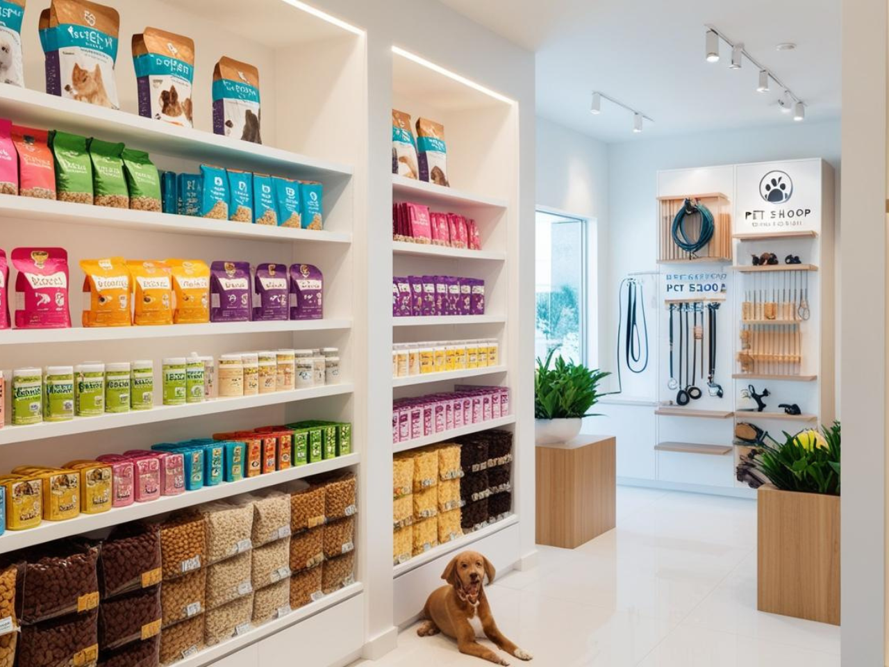

In the last few years I've explored different endeavors. Learning from each try, from every mistake.
Gainng interdiscplinary knowledge and experience that will later translate into building something bigger.
I'm looking forward to conitnuing my personal growth journey and se what the future holds...
Here are some of the projects I've worked on:
